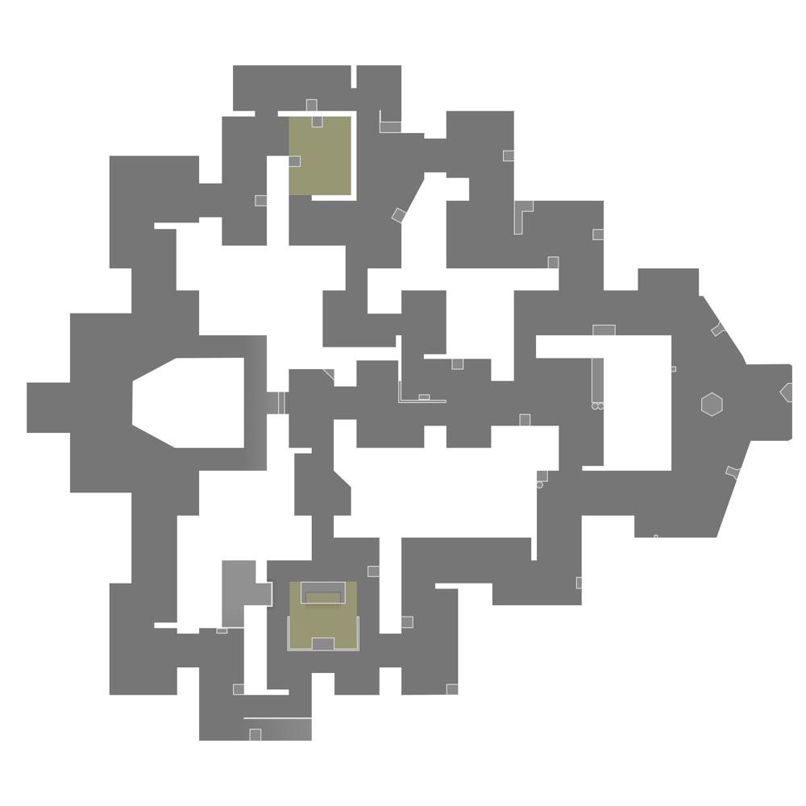

Corrode
🌙 Dark Mode
ğŸ Home
🗺️ All Maps
Full Map
Corrode is a traditional two-site three-lane map. It is the second standard map to be released that does not contain any dynamic elements or mechanical hooks for gameplay.
Mini Map
